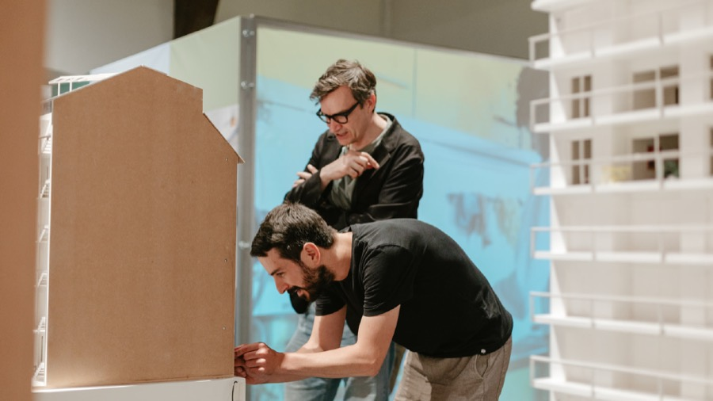
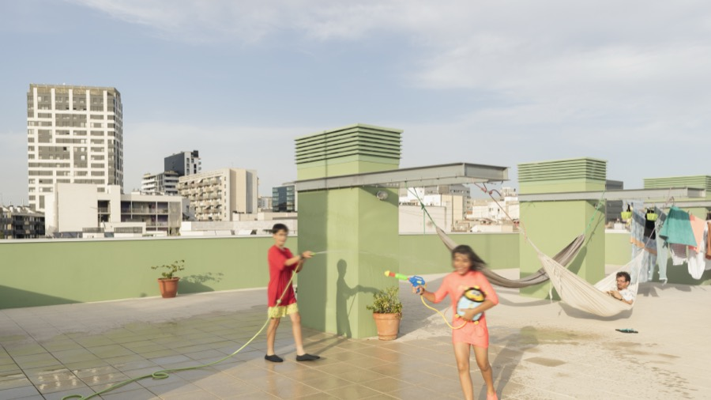
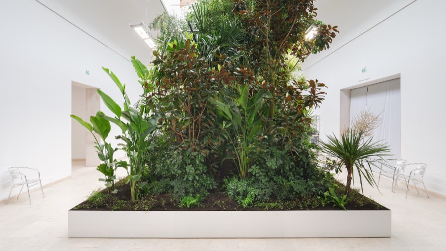
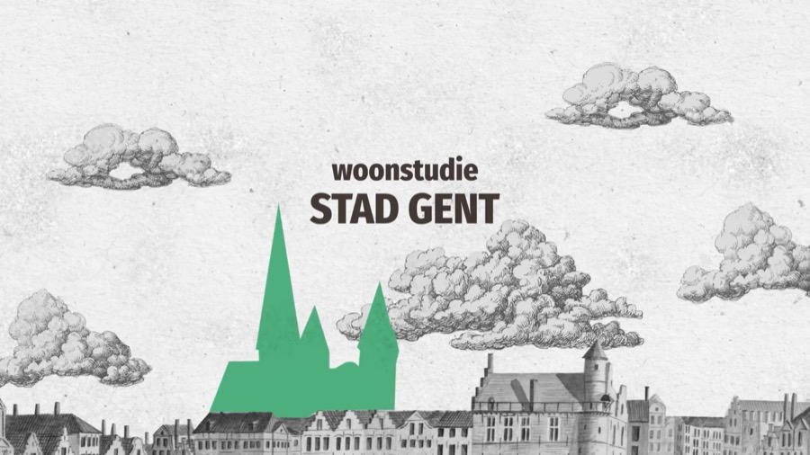
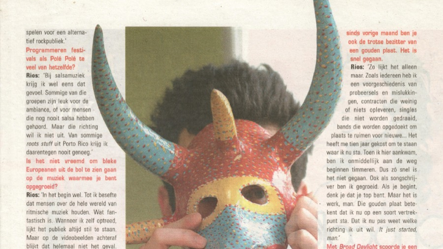
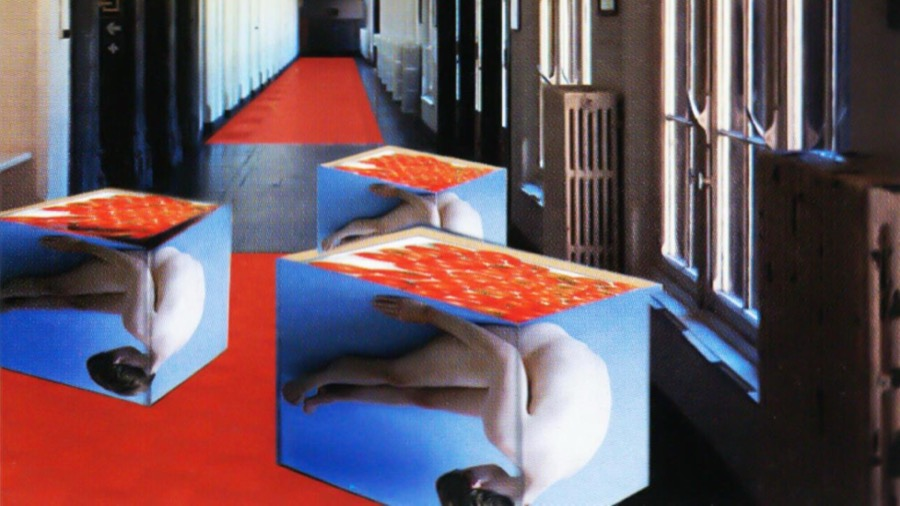

Tekst
Journalistieke artikels, interviews, publicaties en tentoonstellingsteksten. Over kunst en architectuur, maar ook over de mensen en maatschappelijke vragen die erachter schuilgaan.
Publicaties en projecten

Makers van Architectuurwijzer

Hier wil ik wonen! Coöperatief woondromen in Vlaanderen

Pionieren met wooncoöperaties. Hefbomen voor overheden

Architectuurbiënnale Venetië 2025

Woonstudie Gent

Weg met De Soete!

Zone 09 – Cultuur- en muziekjournalistiek
